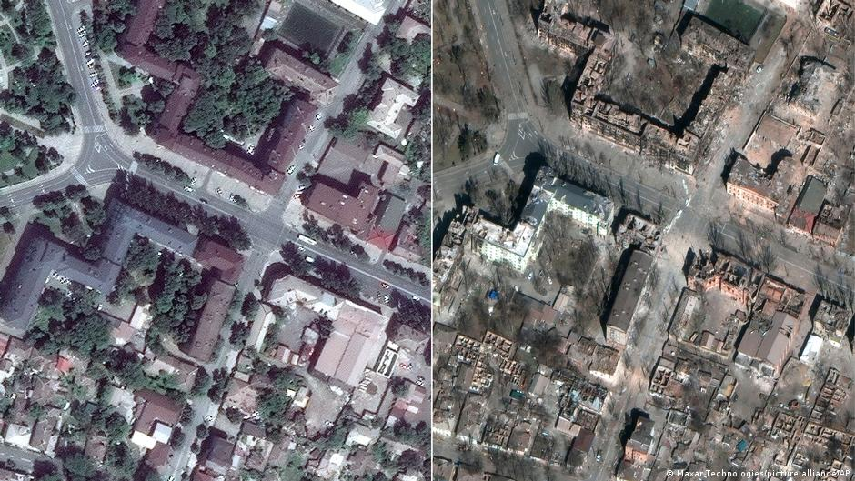
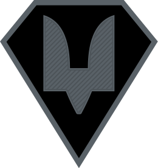

Вітаю! Ми українці, ми все ще боремося за незалежність у східній Європі проти агрессії Російської Федерації. І зараз, наша команда ділиться правдивою інформацією щодо війни з 24.02.2022. Насправді, сподіваємося, що ця веб-сторінка вам сподобається.
Створено розробником LENFYS

Mariupol (Before Invasion / After)

ГОЛОВНА
ДЕВ
КОНТАКТИ